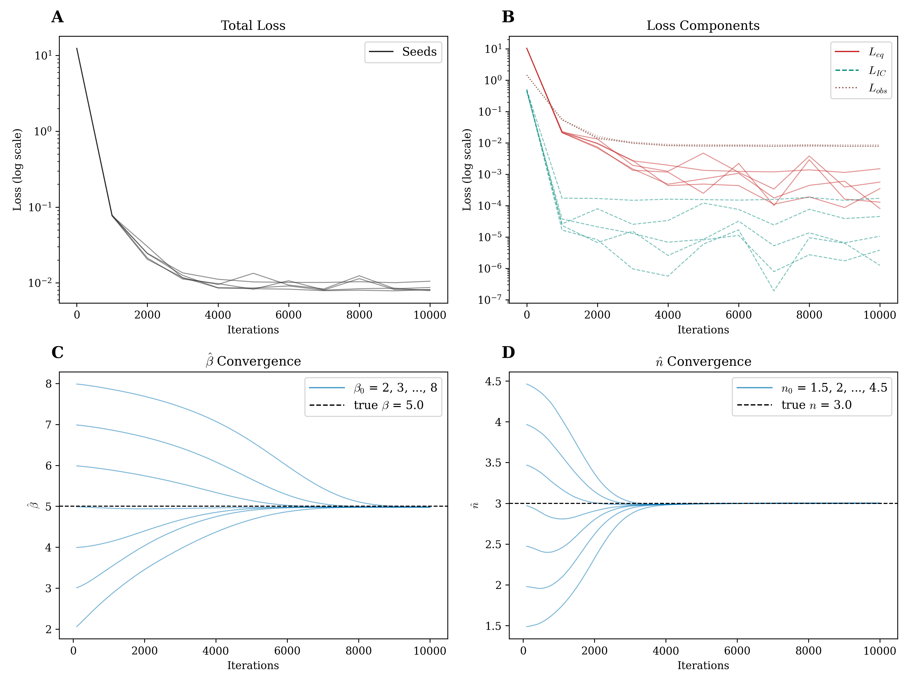

I am a Biomedicine student at the University of Vic – Central University of Catalonia, conducting research on gene regulatory networks in the Computational Biochemistry and Biophysics Lab, with a particular interest in complex systems and their underlying mathematical principles.
I focus on understanding how collective behavior emerges from interacting units, leading to phenomena such as synchronization, chaos, and critical transitions. My research combines dynamical systems theory and network science, using physics-informed and structure-aware machine learning to develop methods for system identification, model discovery, and control. Although my current work is centered on biological mechanisms with potential biomedical applications, I aim to develop general mathematical and computational frameworks for understanding these concepts across disciplines.
While my academic background is in Biochemistry and Biomedicine, over the past three years I found myself increasingly drawn to the mathematical language through which nature can be described. This curiosity was already evident in an early project on fractal geometry and in a long-standing fascination with fundamental ideas in physics. An Erasmus year at the University of Milan, where I studied mathematical modelling, biophysics, and artificial intelligence, further strengthened this perspective. Today, these interests naturally converge in my research.
Outside of science, I enjoy weightlifting, outdoor sports like hiking and football, and more reflective activities such as cinema and reading.
Inferring parameters in mechanistic models from time-series is a central challenge in systems biology, and especially hard in oscillatory networks: the objective is non-convex and classical fitting methods are often insufficient. The repressilator, a synthetic three-gene oscillator in which proteins repress one another, is a perfect toy model to study this problem. Governed by the system of ordinary differential equations (ODEs):
the objective is to recover the production rate $\beta$ and Hill coefficient $n$ from sparse, incomplete, and noisy data, mimicking real experimental observations. Physics-Informed Neural Networks (PINNs) offer a natural approach: embedding the governing equations into the training loss so that network weights and unknown parameters are jointly optimised, minimising a weighted sum of three terms:
where $\mathcal{L}_{\text{eq}}$ penalises ODE residuals, $\mathcal{L}_{\text{IC}}$ enforces initial conditions, and $\mathcal{L}_{\text{obs}}$ fits the data.
Our results demonstrate that PINNs recover $\beta$ and $n$ accurately across noise levels, different degrees of observability, various initial parameter guesses and within stable and oscillatory regimes, matching or outperforming a classical L-BFGS-B baseline. The physics residual $\mathcal{L}_{\text{eq}}$ dominates early training and decays as the trajectory locks onto the specific attractor, regularising the optimiser toward the correct solution even from distant starting points.

We therefore conclude that PINNs are a promising tool for reverse engineering in oscillatory systems, providing an empirical analysis of the method's performance and limitations.
No publications yet.
Interesting mathematical models from different domains. Each entry summarizes the idea, equations, computational setup, and simulation graphics.
This section will gather concise mathematical notes and derivations, with definitions, theorems, and references organized by topic.
Education
- Bachelor's Degree in Biomedicine | 2022 – Present University of Vic – Central University of Catalonia.
- Erasmus Exchange | 2025 – 2026 Università degli Studi di Milano.
- Bachelor's Degree in Biochemistry (60 ECTS) | 2021 – 2022 Autonomous University of Barcelona.
Research Experience
- Computational Biochemistry and Biophysics Lab, UVic-UCC | 2025 – Present Reverse engineering of biological dynamical systems using Physics-Informed Neural Networks (PINNs).
Work Experience
- Mathematics Private Tutor | 2024 – 2025
- Waiter | Summer 2024 Hotel – Restaurant L'AVET.
- Laboratory Assistant | Summer 2023 Avinent Implant System.
Technical Skills
- Programming Languages: Python, R.
- Libraries & Tools: NumPy, SciPy, Matplotlib, TensorFlow, DeepXDE, Git, LaTeX.
Languages
- Catalan and Spanish (native), fluent in English (B2), understanding of Italian